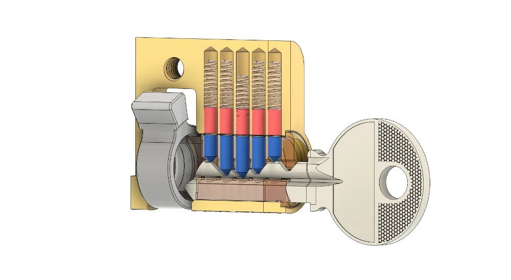
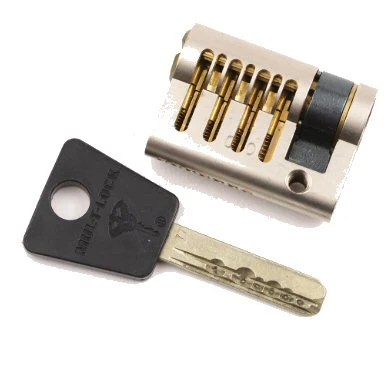
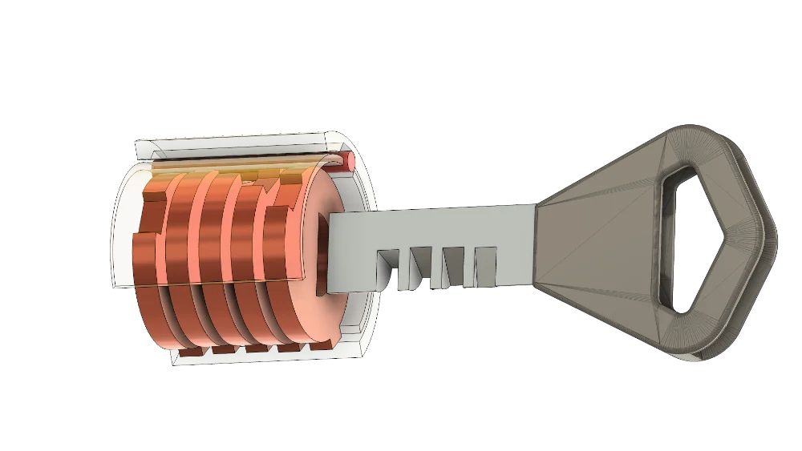
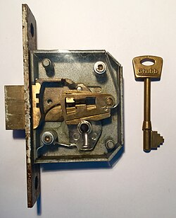
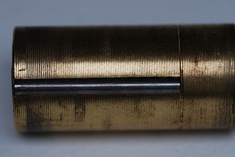
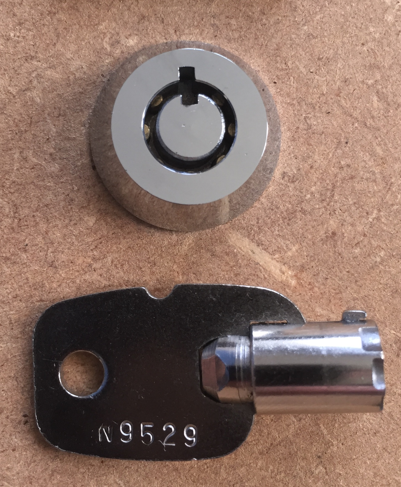
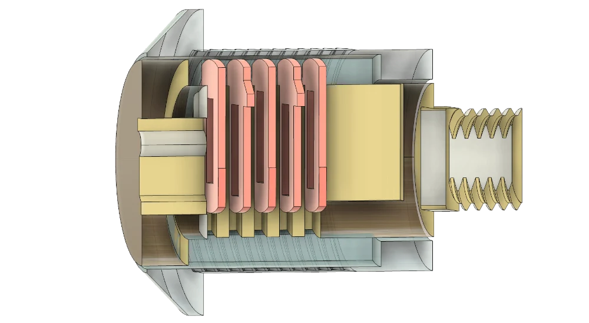
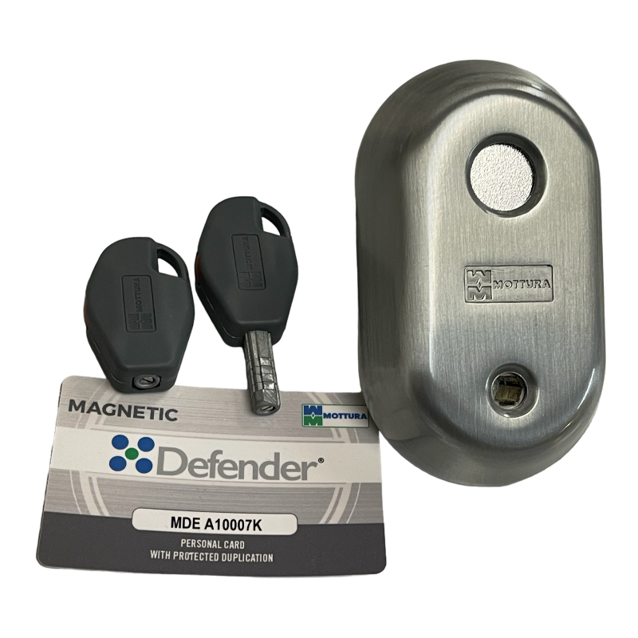
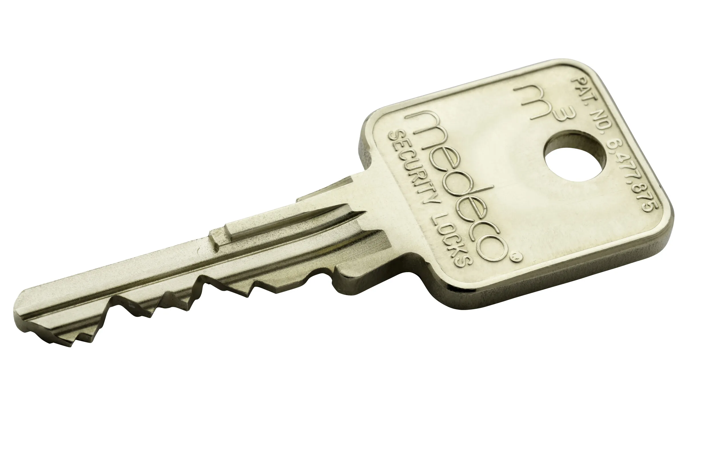
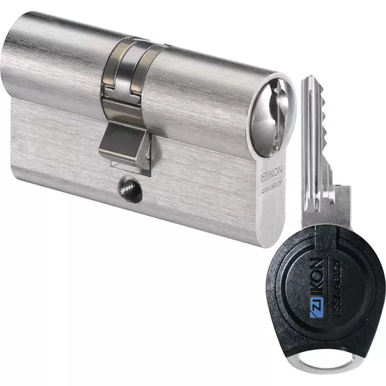

Top 10 najpoznatijih vrsta mehanizama za zaključavanje

1. Bravarski mehanizam sa klinovima (Pin Tumbler Lock)
je najrasprostranjeniji tip mehanizma na svijetu, koji se koristi u
većini standardnih ulaznih vrata i katanaca. Sastoji se od niza
vertikalnih komora u kojima se nalaze parovi klinova (kodni i pogonski)
i opruge. Kada se ubaci odgovarajući ključ, njegovi zupci podižu klinove
na tačnu visinu tako da se granica između njih poravna sa linijom
razdvajanja (shear line), što omogućava jezgru da se okrene. Njegova
glavna prednost je jednostavnost proizvodnje, ali osnovni modeli pružaju
nizak nivo zaštite od naprednih tehnika otvaranja.

2. Brava sa tačkastim ključem (Dimple Lock)
funkcioniše na istom osnovnom principu kao i klasični pin tumbler, ali
sa ključnom razlikom u orijentaciji i obliku ključa. Umjesto vertikalnih
zubaca na ivici, ključ je ravan i na svojoj površini ima izbušena
udubljenja (tačkice) različitih dubina. Klinovi unutar cilindra se
pomjeraju horizontalno ili pod specifičnim uglovima, a prorez za ključ
je postavljen horizontalno. Zbog ovakve konstrukcije, ovi cilindri često
imaju veći broj klinova i mnogo uži profil otvora, što drastično otežava
uvođenje provalničkih alata.

3. Brava sa diskovima (Disc Detainer Lock)
ne koristi opruge ni klasične klinove, zbog čega je izuzetno otporan na
spoljne uticaje poput prljavštine, zamrzavanja ili rđe. Sastoji se od
niza rotirajućih metalnih diskova sa specifičnim prorezima. Kada se
ubaci ključ sa polukružnim usjecima i okrene, svaki disk se rotira za
tačno određen broj stepeni. Kada se svi diskovi pravilno poravnaju,
stvara se kontinualni žlijeb u koji upada bočna metalna šipka (sidebar),
čime se oslobađa mehanizam za okretanje. Ove brave su izuzetno teške za
pipanje i češljanje.

4. Polužna brava (Lever Tumbler Lock)
je jedan od najstarijih tipova mehanizama koji se i danas masovno
koristi, uglavnom na sefovima, trezorima i starijim unutrašnjim vratima
(često prepoznatljiv po velikim „leptir” ključevima). Mehanizam se
sastoji od niza ravnih metalnih ploča (poluga) sa prorezima, koje su pod
pritiskom lisnatih opruga. Ključ sa svojim zubima podiže ove poluge na
tačne visine kako bi se njihovi prorezi poravnali i omogućili prolazak
klina koji je povezan sa glavnim zasunom (jezičkom) brave.
Visokosigurnosne verzije ovih brava pružaju izuzetnu otpornost na
destruktivne napade.

5. Brava sa bočnom šipkom (Sidebar Lock)
se rijetko koristi samostalno, već se obično kombinuje sa pin tumbler
ili disc detainer sistemima radi stvaranja visokosigurnosnih cilindara.
Ključni element je uzdužna metalna šipka smještena u tijelu jezgra koja
fizički sprečava rotaciju tako što upada u žlijeb kućišta. Da bi se
brava otvorila, ključ ne samo da mora da poravna primarne klinove, već
mora imati i poseban profil (poput zmijolike linije na strani) koji
poravnava sekundarni mehanizam koji drži bočnu šipku. Ovo pruža izuzetnu
zaštitu od tehnike udarnog ključa (lock bumping).

6. Cjevasta brava (Tubular Lock)
prepoznatljiva po svom specifičnom, okruglom ključu u obliku cijevi sa
usjecima po obodu, ova brava se najčešće sreće na kompjuterskim bravama
za laptopove, automatima za kafu, alarmnim centralama i pojedinim
katancima za bicikle. Funkcioniše po sličnom principu kao i obični pin
tumbler, ali su klinovi raspoređeni u krug i pomjeraju se horizontalno
(unutra-vanka) duž ose cilindra, a ne vertikalno. Iako izgledaju
egzotično, osnovne verzije cjevastih brava mogu se relativno lako
otvoriti specijalizovanim cjevastim provalničkim alatima koji automatski
dekodiraju poziciju klinova.

7. Vafli brava ili brava sa pločicama (Wafer Tumbler Lock)
koristi tanke, jednodjelne metalne pločice (vafle) sa pravougaonim
otvorom u sredini kroz koji prolazi ključ, umjesto dvodjelnih klinova.
Pod uticajem opruga, ove pločice štrče iz gornjeg ili donjeg dijela
jezgra i blokiraju rotaciju. Kada se ubaci odgovarajući dvostrani ili
jednostrani ključ, on povlači sve pločice unutar granica jezgra
cilindra. Zbog niskih troškova proizvodnje i kompaktnosti, ove brave se
masovno koriste u automobilskoj industriji (za starija vozila), na
poštanskim sandučićima, fiokama radnih stolova i jeftinim katancima, ali
nude veoma nizak nivo sigurnosti.

8. Magnetska brava (Magnetic Element Lock)
eliminiše ili značajno smanjuje mehanički kontakt potreban za
identifikaciju ključa. Ključ za ovu bravu u sebi sadrži trajne magnete
sa specifično usmjerenim polaritetima i uglovima. Unutar samog cilindra
nalaze se rotirajući ili klizni magnetski elementi (rotori) koji reaguju
na magnetno polje ključa. Tek kada se unutrašnji magneti privuku ili
odbiju u tačno definisane pozicije, mehanizam dozvoljava otključavanje.
Ove brave su imune na klasične mehaničke alate za pipanje jer unutar
otvora nema fizičkih klinova koje bi alat mogao da pritisne.

9. Rotaciono-klinasti mehanizam (Axial / Rotating Pin Lock)
predstavlja vrhunac mehaničke zaštite i koristi se u brendovima kao što
je Medeco. Mehanizam kombinuje podizanje klinova sa njihovom rotacijom.
Ključ na sebi ima zupce koji su sječeni pod specifičnim uglovima
(ulijevo, udesno ili ravno). Kada ključ uđe u bravu, on ne samo da
podiže klinove na pravu visinu, već ih i rotira oko sopstvene ose. Svaki
klin na sebi ima mali prorez koji mora da se poravna sa bočnom šipkom
(sidebar). Zbog ove dvije nezavisne dimenzije zaključavanja (visina i
ugao), ove brave su ekstremno otporne na manipulaciju i dekodiranje.

10. Elektronsko-mehanička brava (Mechatronic Lock)
predstavlja hibrid klasične mehanike i digitalne tehnologije. Spolja
može izgledati kao običan cilindar, a njen ključ ima mehanički profil,
ali se u samom ključu i cilindru nalaze mikročipovi. Kada se ključ
ubaci, cilindar preko kontakta (ili bežično) napaja čip u ključu i vrši
se kriptografska razmjena podataka. Tek kada elektronska jedinica unutar
brave potvrdi digitalni kod, mali elektromotor ili solenoid unutar
cilindra oslobađa mehaničku blokadu, dozvoljavajući korisniku da okrene
ključ i otvori vrata, što pruža maksimalnu kontrolu pristupa i
nemogućnost neovlašćenog kopiranja ključa.